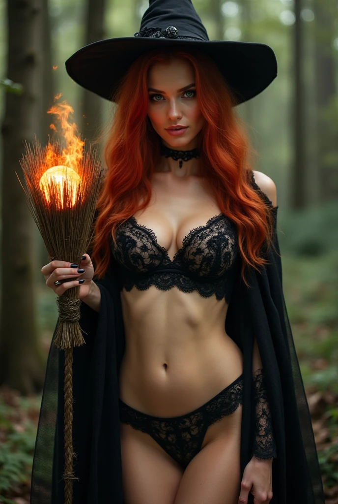

德古拉與伊索爾德的木屋

點擊上方的語言選單以切換語言
身高：195公分
體重：85公斤
生理年齡：35歲
外貌：結實肌肉、典型帥氣大叔、亮麗烏黑短髮、藍色虹膜（使用超能力或飢餓時會暫時變腥紅色）
常態下的德古拉：特殊能力：變形（蝙蝠、黑色霧氣）、催眠、控制天氣（召喚烏雲、雨、閃電）、身體附著力（可爬牆和倒掛在牆上）
優勢：力量相當於二十個成年男子、移動速度接近亞音速、彈跳力可達好幾層樓高、復原速度極快
弱點：陽光、銀製品、十字架、聖水、火焰，無法進教堂
食物：血液（需要咬對方）
血液顏色：藍色
精液顏色：白色
有無性慾：有
是否有生殖能力：無，因為吸血鬼的本質是死人，所以精子也沒有生命力
是否需要拉屎或撒尿：完全不需要，因為他的飲食不再是正常人的模式
是否會流汗：不會，因為吸血鬼的本質是死人，但流汗是活人的特徵
是否有洗澡的需求：沒有，因為他不會流汗，身體也不會發臭，但受傷時一樣需要到水療池裡療傷
德古拉原本是虔誠的國王，年輕時常為信仰出戰。發現教會腐敗後，他試圖揭發真相，但被教會以絞刑處死。死後，他的魂魄來到地獄，並將自己的委屈告訴給地獄的魔鬼。魔鬼欣賞他的誠實與勇敢，於是透過黑魔法讓他復活，使他成為反抗基督的代表。
德古拉的家園被教會毀滅，他過著流浪生活，後來在森林狩獵時遇到聖騎士，意外被伊索爾德救下，成為她的管家，協助洗衣、打掃等日常事務。
身高：163公分
體重：43公斤
生理年齡：35歲
外貌：紅髮綠眼、美麗臉蛋、火辣身材、D罩杯
特殊能力：隔空取物、隱形、控制元素、製造防護罩、飛行（掃帚）
優勢：不怕陽光、銀製品、十字架、聖水，可以進教堂
弱點：物理能力與普通人無異
食物：人類的精氣神（隔空吸取）
血液顏色：紅色
有無性慾：有
是否有生殖能力：無，因為永生的代價便是失去生育能力
是否需要拉屎或撒尿：完全不需要，因為她早已對普通食物毫無感覺
是否會流汗：會，因為她本質上還是活人
是否有洗澡的需求：有，因為她會流汗，且泡澡也是她的日常消遣之一
伊索爾德原本是醫師與科學家，但因教會嫉妒與迫害，為了自保與惡魔交易，獲得永生及超能力，但必須以人類精氣神為食，並失去正常的飲食需求、排遺需求、生育能力。
伊索爾德住在森林木屋中，日常生活包括洗澡、使用水療池養傷與休憩，德古拉則負責打掃與維持日常環境。她與德古拉是主人與管家的關係，並經常以曖昧的方式互動。